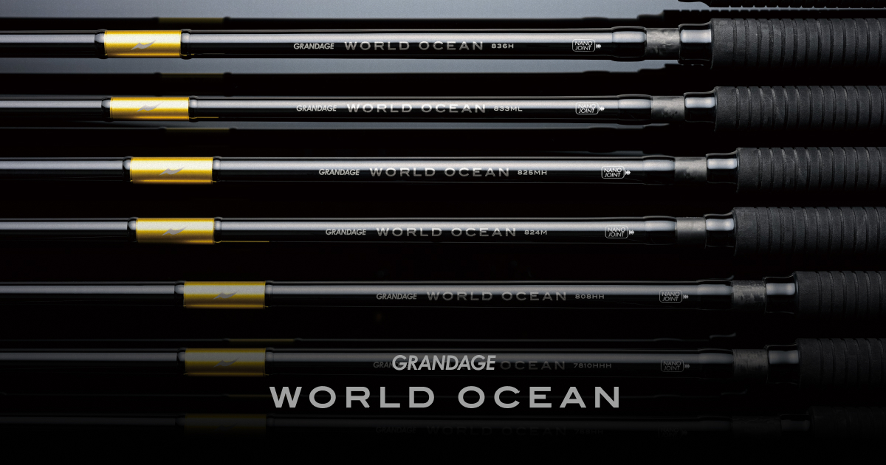
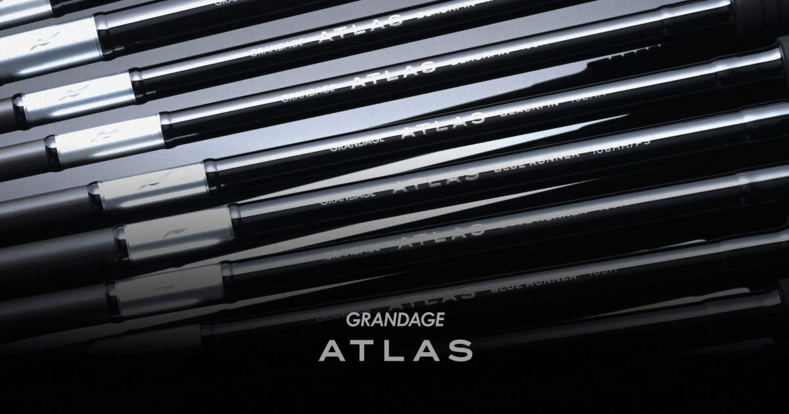
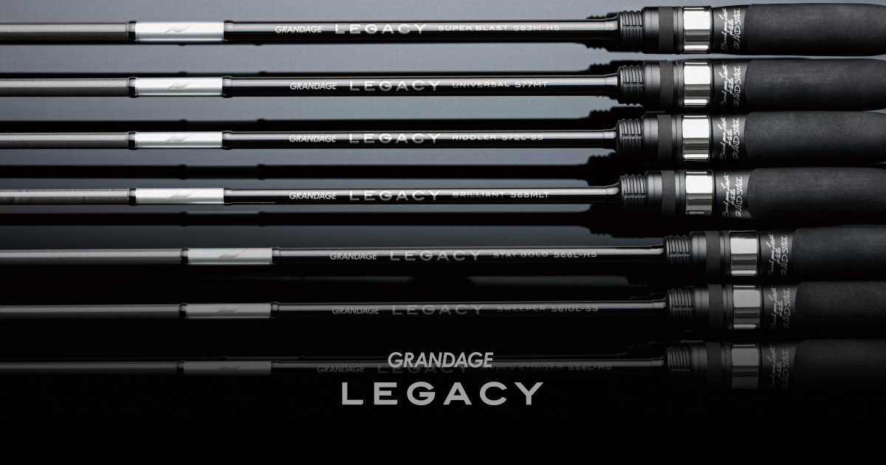
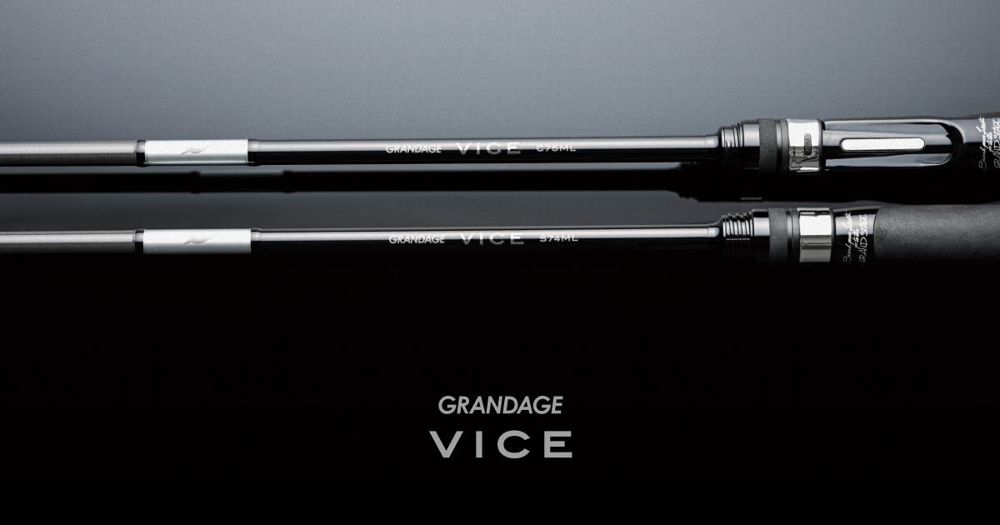
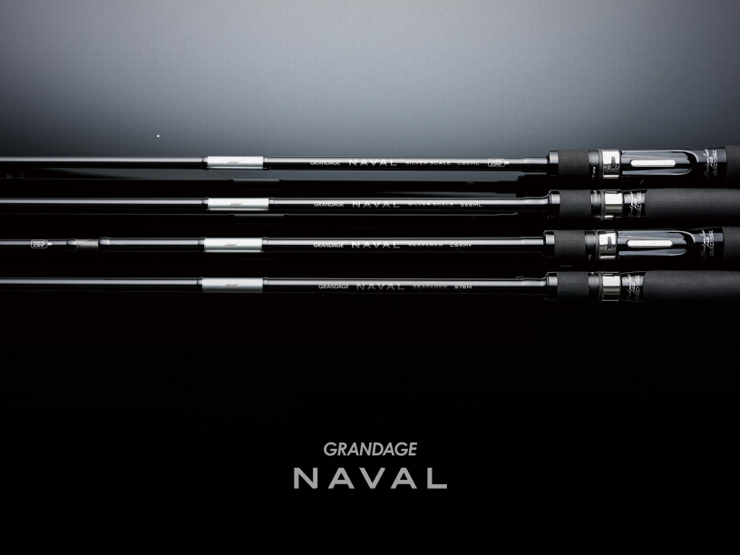

グランデージ
（GRANDAGE）
グランデージ（GRANDAGE）はAPIA（アピア）のソルトルアーロッドシリーズです。
シーバスロッドの「フージン」シリーズに対して、ロックショア、ロックフィッシュ、ライトゲーム、ボートシーバス、チヌ、海アメマス、オフショアキャスティングなど、釣りごとに特化したサブシリーズで構成されています。多くのサブシリーズにTORAYCA第3世代カーボン「M40X」「T1100G」が使われています。

画像出典:APIA公式HP
スペック
- メーカー
- APIA（アピア）
- タイプ
- ソルトルアーロッド（シリーズ）
- サブシリーズ
- ATLAS／BRUTE／LEGACY／MEGASOUL／NAVAL／NORTHERNLIGHTS／VICE／WORLD OCEAN
- 主な素材
- TORAYCA第3世代カーボン（M40X・T1100G）※サブシリーズにより異なる
- 保証
- APIAプレミアム保証（対象はサブシリーズにより異なる）
▼今すぐチェック
グランデージの特徴
「この釣りのための1本」を、釣りごとのサブシリーズから選べる
-
釣りごとに特化した8つのサブシリーズ
磯のヒラスズキ、ロックフィッシュ、ライトゲーム、ビッグベイト、ボートシーバス、海アメマス・サクラマス、チヌ、オフショアキャスティングと、狙う魚や釣り方に合わせて設計されたサブシリーズがそろう。
-
TORAYCA第3世代カーボンを採用
ATLAS・BRUTE・LEGACY・MEGASOUL・NAVAL・NORTHERNLIGHTSなどに、高弾性「M40X」と高強度「T1100G」を採用。飛距離や感度、パワーを底上げしている。
-
2ピースの弱点を解消する「NANO JOINT」
ATLAS・BRUTE・MEGASOUL・NAVAL・NORTHERNLIGHTSなどには、継部の突っ張りを解消するアピア独自の「NANO JOINT」を搭載。1ピースに近い曲がりを目指している。
グランデージの選び方
まずは「何を狙うか」でサブシリーズを選び、そのあと長さと適合ルアー重量でモデルを絞り込むのが基本です。
磯のヒラスズキならATLAS、漁港のロックフィッシュならBRUTE、アジ・メバルならLEGACY、ボートシーバスならNAVAL、チヌならVICE、海アメマス・サクラマスならNORTHERNLIGHTS、オフショアのキャスティングならWORLD OCEAN、ビッグベイトならMEGASOULと、釣りに合わせて選びましょう。
グランデージのが向いている人
シーバス以外の釣りでもアピアのロッドを使いたい人、狙う魚がはっきり決まっていて「その釣り専用の1本」が欲しい人に向いたシリーズです。
シーバスの陸っぱり用ならフージンZ／フージンRS、それ以外の釣りや特化型ならグランデージ、と考えると選びやすくなります。
ワンポイント
サブシリーズごとに長さ・適合ルアー重量・ライン号数が大きく違います。購入前に、公式サイトで各サブシリーズのスペック表を確認しておきましょう。
APIAプレミアム保証の対象はサブシリーズや生産時期によって異なるので、あわせて確認しておくと安心です。
グランデージのサブシリーズ
| サブシリーズ | 主な釣り | 特徴 |
|---|---|---|
| ATLAS | 磯のヒラスズキ・中型青物 | 反発力とパワーの強いヒラスズキロッド。風の強い磯でも使えるパワーモデル |
| BRUTE | ロックフィッシュ | 近・中・長距離とメソッドごとに役目を特化したラインナップ |
| LEGACY | ライトゲーム | 第3世代カーボンを全長に使い、感度と操作性を大きく向上 |
| MEGASOUL | ビッグベイト | ビッグベイト専用のショートレングススピニングなど |
| NAVAL | ボートシーバス | 短いストロークでも正確に飛ばせる、ボートからのシーバス特化 |
| NORTHERNLIGHTS | 海アメマス・サクラマス | ジャークマン・林準悟氏が完全監修した専用機 |
| VICE | チヌ（クロダイ） | 飛距離・キャスト精度とボトム感知能力を突き詰めたチヌ専用 |
| WORLD OCEAN | オフショアキャスティング | T1100Gと新技術「BULK405」で破壊強度基準を150%に引き上げた |
各サブシリーズの詳しいモデル構成は、公式サイトのサブシリーズごとのページで確認できます。
主なサブシリーズ
グランデージの主なサブシリーズを紹介します。

ATLAS（アトラス）磯のヒラスズキに特化し、中型青物まで対応するパワーモデル。

LEGACY（レガシー）第3世代カーボンを全長に使ったライトゲームロッド。

VICE（ヴァイス）ボトム感知能力を突き詰めたチヌゲーム専用ロッド。

NAVAL（ネイバル）ボートからのシーバスゲームに特化したシリーズ。
画像出典:APIA公式HP
グランデージとあわせてチェックしたいアイテム
-
 フージンZ 6th
アピア
詳細はこちら＞
フージンZ 6th
アピア
詳細はこちら＞
アピアのシーバスロッドのフラッグシップ。陸っぱりのシーバス・ヒラスズキを最高性能の1本で狙いたいならこちら。
-
フージンRS（全モデル紹介）
アピア
詳細はこちら＞
フージンZの製法を受け継いだシーバスロッドのミドルクラス。全12モデルで、シーバス用の“いいロッド”を探している人に。
-
 25 ベンチュラ LT4000-CXH
アピア
詳細はこちら＞
25 ベンチュラ LT4000-CXH
アピア
詳細はこちら＞
アピアのシーバス用スピニングリール。4000番のコンパクトボディで港湾から外洋まで対応する。